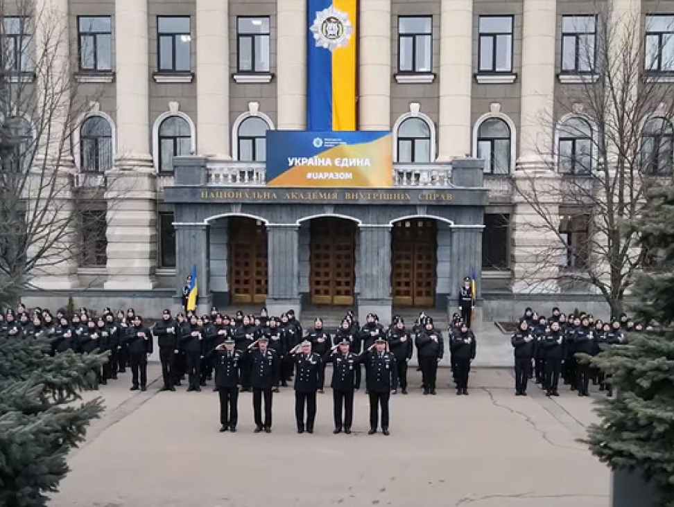

<!--DEV
@ @include('blocks/about-block/about-block.html')
-->

<section class="container  section  about-block">
  @@include('../../blocks/section-header/section-header.html', {
    "tag": "h2",
    "text": "Про нас"
  })

  <div class="row  about-block__inner">

    <div class="about-block__img-col">
      <div class="embed-responsive embed-responsive--4-3  about-block__img">
        <picture>
          <source srcset="img/about-img.webp" media="(min-width: 1280px)" type="image/webp">
          <source srcset="img/about-img.jpg" media="(min-width: 1280px)">
            <!-- 486x365, 972x730 2x -->
          <source srcset="img/about-img.webp" media="(min-width: 1024px)" type="image/webp">
          <source srcset="img/about-img.jpg" media="(min-width: 1024px)">
            <!-- 1185x889 -->
          <source srcset="img/about-img.webp" media="(min-width: 768px)" type="image/webp">
          <source srcset="img/about-img.jpg" media="(min-width: 768px)">
            <!-- 930x697 -->
          <source srcset="img/about-img.webp" media="(min-width: 480px)" type="image/webp">
          <source srcset="img/about-img.jpg" media="(min-width: 480px)">
            <!-- 864x648 -->
          <source srcset="img/about-img.webp" media="(min-width: 320px)" type="image/webp">
          <source srcset="img/about-img.jpg" media="(min-width: 320px)">
            <!-- 720x540 -->
          
      </picture>
      </div>
    </div>

    <div class="about-block__text-col">
      <div class="about-block__text">
        <p>Осередок Національної академії внутрішніх справ міжнародної громадспкої організації Українська секція Міжнародної поліцейської асоціації (колишня назна Солом'янспке районне відділення УС МЛА м.Києва) був створений у квітні 2000р. за ініціативи колишнього Президента УСМПА, ректора Національної академії внутрішніх справ України Кондратьєва Я.Ю. </p>
      </div>
    </div>

  </div>
</section>
